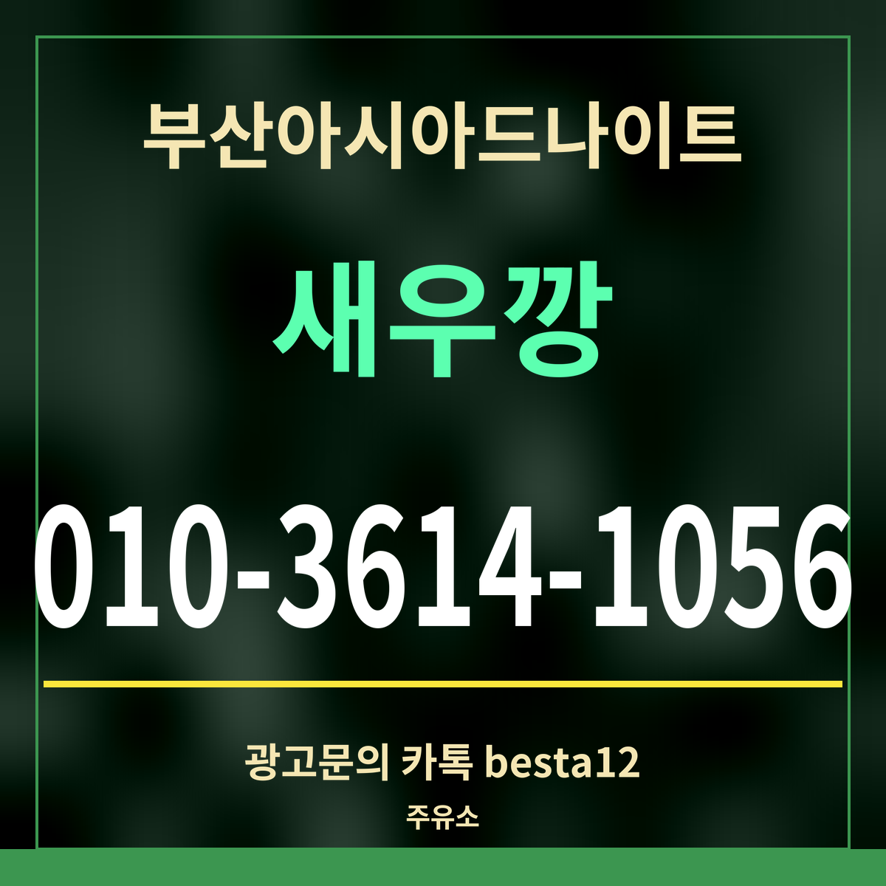

광고19세 미만 출입 금지
부산아시아드나이트 근처 주유소 정리, 가장 가까운 1.3km
주유소 목록: 카카오맵 검색 「동래 주유소」 · 기름값 칸 없음

요약: 가장 가까운 주유소는 한창셀프주유소(우장춘로 56)으로 직선 1,342m입니다. 그다음 네 곳은 모두 충렬대로에 있고 1.8~1.9km 거리입니다.
거리순 주유소
| 주유소 | 브랜드 | 주소 | 거리 |
|---|---|---|---|
| 한창셀프주유소 | HD현대오일뱅크주유소 | 우장춘로 56 | 1,342m |
| 동방석유직영 푸른셀프주유소 | SK주유소 | 충렬대로 123 | 1,785m |
| 광신석유 충렬대로주유소 | SK주유소 | 충렬대로 95 | 1,785m |
| 대일주유소 | 알뜰주유소 | 충렬대로 124 | 1,828m |
| 삼보명진주유소 | GS칼텍스 | 충렬대로 51 | 1,908m |
| 명장주유소 | 알뜰주유소 | 반송로 303 | 2,420m |
| 한길주유소 교대점 | HD현대오일뱅크주유소 | 여고로 131 | 2,442m |
| 한양셀프주유소 | SK주유소 | 충렬대로 302 | 2,490m |
오는 길에 넣으세요
동래온천 둘레 골목에는 주유소가 없어서, 기름이 부족하면 오는 길의 큰길에서 미리 넣는 편이 편합니다. 충렬대로를 지나 온다면 그 길의 주유소가, 우장춘로 쪽에서 온다면 셀프주유소가 가깝습니다. 기름값과 영업시간은 목록에 없어 적지 않았습니다.
무엇보다 술을 마실 계획이라면 차를 두고 오는 것이 가장 좋습니다. 차를 가져왔다면 대리운전을 부르거나 다음 날 찾으러 오세요. 부산아시아드나이트 담당에게 주차 가능 시간을 먼저 물어 두면 편합니다.
차 대신 쓸 길
술을 마실 생각이라면 1호선 온천장역(걸어서 10분)이나 버스를 쓰는 편이 편합니다. 한밤에는 온천시장 정류장(160m)에 심야버스 1002번이 섭니다.
자주 묻는 것
가장 가까운 주유소는?
한창셀프주유소(우장춘로 56) — 직선 1,342m.
한창셀프주유소(우장춘로 56) — 직선 1,342m.
알뜰주유소도 있나요?
대일주유소(충렬대로 124 · 1,828m)가 알뜰주유소입니다.
대일주유소(충렬대로 124 · 1,828m)가 알뜰주유소입니다.
기름값은요?
목록에 없어 적지 않았습니다.
목록에 없어 적지 않았습니다.
한 줄 정리: 부산아시아드나이트 근처 주유소는 1.3km 밖 — 기름은 오는 길에 넣으세요.
전기차라면 103m 충전소가 있습니다.
이 페이지는 광고이며, 업소 제공 정보를 받아 실었습니다(담당 새우깡). 확인일 2026-09-27.